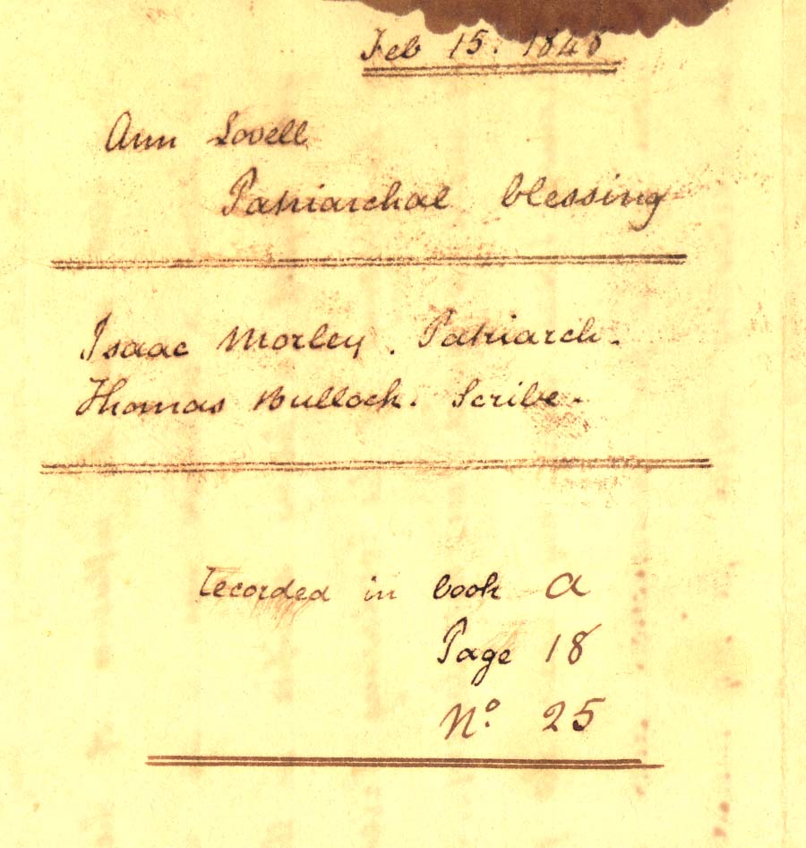
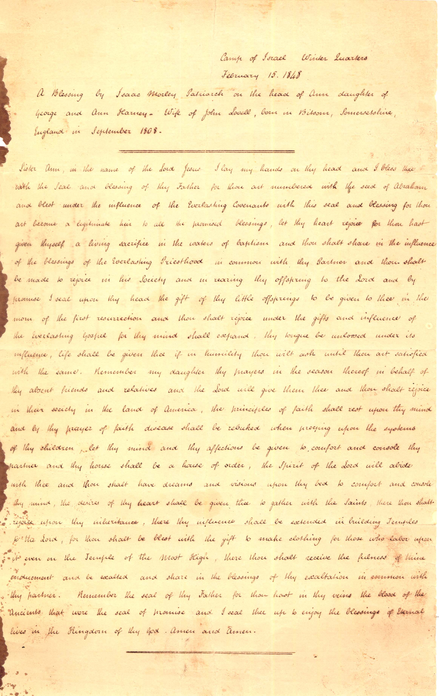

Ann Lovell Patriarchal Blessing Feb. 15, 1848
==================================
Isaac Morley - Patriarch
Thomas Bullock - Scribe
==================================
Recorded in book A. Page 18 No. 25
==================================
Camp of Israel Winter Quarters
February 15, 1848
A Blessing by Isaac Morley Patriarch on the head of Ann daughter of George and Ann Harney - Wife of John Lovell, born Bitson, Somersetshire, England in September 1808.==================================
Sister Ann, in the name of the Lord Jesus I lay my hands on thy head and I bless thee with the Seal and blessing of thy Father for thou are numbered with the seed of Abraham and blest under the influence of the Everlasting Covenants with this seal and blessing for thou art become a legitimate heir to all the promised blessings, let thy heart rejoice for thou hast given thyself a living sacrifice in the waters of baptism and thou shalt share in the influence of the blessings of the Everlasting Priesthood in common with thy Partner and thou shalt be made to rejoice in his Society and in rearing thy offspring to the Lord and by promise I seal upon thy head the gift of thy little offsprings to be given thee in the morn of the first resurrection and thou shalt rejoice under the gifts and influence of the Everlasting Gospel for thy mind shall expand, thy tongue be loosed under its influence, life shall be given thee if in humility thou wilt ask until thou art satisfied with the same. Remember my daughter thy prayers in the season thereof in behalf of thy absent friends and relatives and the Lord will give them thee and thou shalt rejoice in their society in the land of America, the principles of faith shall rest upon thy mind and by thy prayer of faith disease shall be rebuked when preying upon the systems of thy children, let thy mind and thy affections be given to comfort and console thy partner and thy house shall be a house of order, the Spirit of the Lord will abide with thee and thou shalt have dreams and visions upon thy bed to comfort and console thy mind, the desires of thy heart shall be given thee to gather with the Saints, there thou shalt rejoice upon thy inheritance, there thy influence shall be extended in building Temples to the Lord, for thou shalt be blest with the gift to make clothing for those who labor upon it even on the Temple of the Most High, there thou shalt receive the fulness of thine enduement and be exalted and share in the blessings of thy exaltation in common with thy partner. Remember the seal of thy Father for thou hast in thy veins the blood of the Ancients that wore the seal of promise and I seal thee up to enjoy the blessings of Eternal lives in the Kingdon of thy God. Amen and Amen.
==================================
[Transcribed Feb/Mar 2000 by Joseph F. Buchanan]